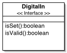
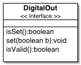
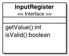
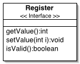
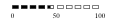
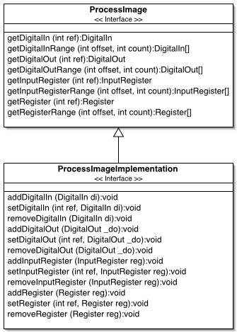

Understanding the Process Image
- About
- What is a Process Image?
- ProcessImage - The Collection
- Example Implementation and Extensibility
About
This document should help the reader to understand the ideas behind the abstraction
of a process image suited for the Modbus basic data types.
What is a Process Image?
Lets assume we have a continuous ongoing process and we are using measurements
to observe the process. The measurements will be made at certain points in time,
representing a discretization of the actual measured functions into a sequence
of sets {f(ti), g(ti), h(ti), ...}. Each set
of values should be homogenous in relation to time, i.e. the values should correspond
to one and the same point in time ti to be meaningful for observations
(or control) of the process.
Especially if we have multiple "users" (i.e. corresponding control programs,
network data acquisition, visualization etc.) accessing the data concurrently,
we want to ensure this property. Thus requests are not directly made to corresponding
I/O modules, but rather to a set corresponding to a certain point in time, that
is stored cyclically in a block of memory (usually deploying some kind of synchronization
mechanism for sequential access). This memory stored set of process measurements
(or I/O states) is often called "process image", as it represents the
state of a process at a certain point of time (respectively in terms of what we
can measure).
A Process Image for Modbus
As described in Understanding the Protocol - Modbus Data Model, a set of simple data types is defined by the Modbus specification. The following list presents the abstract models for the different corresponding types of the data model:
- a Digital Input (for a discrete input)
- a Digital Output (for a discrete output or coil)
- an Input Register (for an input register)
- a Register (for a holding register)
The accessible and modifiable collection of elements which are instances of 1-4 is an abstraction of the idea of a process image, like presented before. All of these elements are discussed in the following subsections.
Digital Input
Basically represents an abstraction for an input that is fed by a digital sensor (i.e. 1 or 0, respectively true/false or on/off etc.). Figure 1 presents a possible symbolic notation and the interface representing the corresponding software model (DigitalIn).
Figure 1: Digital Input Model
|

|
|
It consists of isSet() and isValid(), latter for checking whether the returned state of the input is valid.
Digital Output
Basically represents an abstraction for an I/O connected to a digital actor. It can be in, as well as switched into, the states on/off (respectively true/false or 1/0 etc.). Figure 2 presents a possible symbolic notation of the input states and the interface representing the corresponding software model (DigitalOut).
Figure 2: Digital Output Model
|

|
 |
It consists of isSet(), set(boolean) and isValid(), latter for checking whether the returned state of the output is valid.
Input Register
Represents an abstraction for an analog input that is fed by an analog sensor. It can take a range of values, which is basically limited by the number of possible values for a 16 bit Integer. Figure 3presents a possible symbolic notation and the interface representing the corresponding software model (InputRegister).
Figure 3: Input Register Model
|

|
|
It consists of getValue() and isValid(), latter for checking whether the returned value of the input is valid.
Register
Represents an abstraction for an analog I/O connected to an analog actor. It can take and be set a range of values, which is limited by the number of possible values for a 16 bit Integer. Figure 4 presents a possible symbolic notation and the interface representing the corresponding software model (Register).
Figure 4: Register Model
|

|

|
It consists of getValue(), setValue(int) and isValid(), latter for checking whether the returned value of the I/O is valid.
ProcessImage - The Collection
Represents the actual process image, a collection of all instances of the formerly presented elements (DigitalIn, DigitalOut , InputRegister, Register). According to the Modbus specification, the simplest organization of this data in "memory" for a virtual device which has no real memory limits, are separate blocks for each data type. The resulting software model (ProcessImage, and ProcessImageImplementation) are presented in Figure 5.
Figure 5: Process Image Model
|

|
Example Implementation and Extensibility
The presented model is definitely kept very simple, but it is extremely powerful. First, it is possible to simply swap references of two ProcessImage instances cyclically (sequential access can be ensured easily). Alternating, one presents the snapshot of a given moment in time, while the other is refreshed with new data. However, if this is not necessary, synchronization mechanisms can be still deployed at the level of element instances (respectively their implementations).
Second, the generic interface allows generic slave access to the standard Modbus
data types; in a few lines of code you can have your Modbus slave (or server)
up and running.
jamod comes with a very simple demonstration implementation. All related classes
are prefixed with Simple:
The set methods of these classes are synchronized, which will ensure
atomic access, but not a specific access order. If you are interested in specialized
implementations, I recommend to take a look at:
Lea, Doug: "Concurrent Programming in Java: Design Principles and Patterns",
Second Edition, Addison-Wesley, ISBN 0-201-31009-0, November 1999.
The online supplement (which you might want to check out for the code) is available at:
http://gee.cs.oswego.edu/dl/cpj
How to make use of the Model
The basic idea behind the set of interfaces is to make the developers life more simple. The following example source will show how to implement a DigitalIn that returns a random value. From this example and the demonstration example, you can hopefully infer a more sense making implementation, probably based on the Java Native Interface (JNI).
package net.wimpi.example;
import net.wimpi.modbus.procimg.*;
import java.util.Random;
public final class RandomDigitalIn
implements DigitalIn {
//instance variables
private Random m_Random;
/**
* Constructs a new <tt>RandomDigitalIn</tt>.
*/
public RandomDigitalIn() {
m_Random = new Random();
}//constructor
/**
* Constructs a new <tt>RandomDigitalIn</tt>
* with a given <tt>Random</tt> instance.
*/
public RandomDigitalIn(Random rnd) {
m_Random = rnd;
}//cinstructor(Random)
public final boolean isSet() {
return m_Random.nextBoolean();
}//isSet
public final boolean isValid() {
return true;
}//isValid
}//RandomDigitalIn
You can use instances of RandomDigitalIn in the examples of the Slave How-To's to complete the picture of the process image model idea.
by Dieter Wimberger